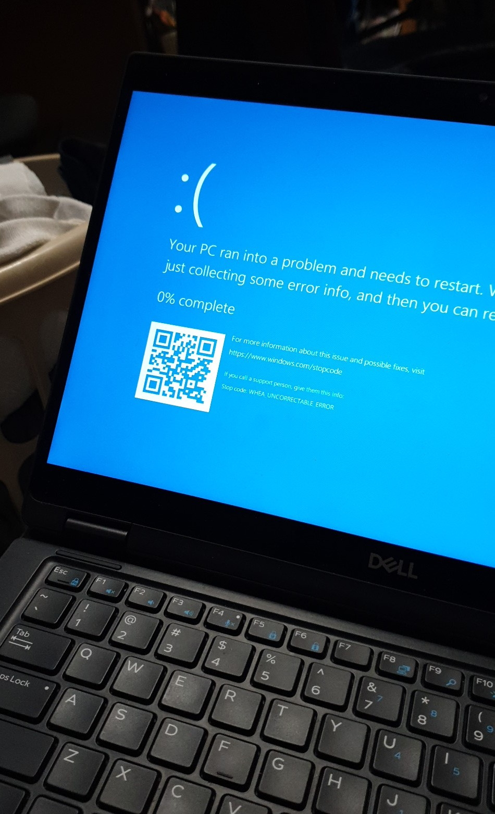

I’ve been dual-booting my Dell Latitude 7390 with Windows 10 and Parrot since the start of 2018.
Recently, my Windows 10 installation had been bombarding me with a barrage of pretty blue screens with the WHEA_UNCORRECTABLE_ERROR message whenever I connected a USB device.
I tried updating my BIOS and other firmwares, nope.
I tried uninstalling softwares and drivers, nope.
I tried removing my Parrot OS microSD card, nope.
I tried to not plug in any USB device ever again… it then started to crash even without a USB inserted.
It was time for a re-install.

Before installing my operating systems, I decided to upgrade my M.2 SSD capacity to 512 GB.
I had one casually lying around, and didn’t need any larger one / want to get out off my seat and find / buy one / I’m poor.
The rationale behind that was so that I could also install a Linux operating system alongside my Windows and Parrot installations so I could do Linux development and work natively, instead of being emulated in a virtual machine.
- 512 GB SSD
- Windows (~256 GB SSD)
- Games
- Adobe stuff
- Resilio Sync
- Pop OS (~256 GB SSD)
- All things programming and dev
- 64 GB microSD
- Parrot (microSD)
HaxxorSecurity education.
Pop OS
I stumbled upon Pop OS when searching for alternatives to Ubuntu.
Having not really researched much into it, Pop OS is a distro based on Ubuntu, but looks more minimal and cleaner.
So why not give it a go! (Also everyone installs Ubuntu, psh)
File Sharing / Syncing
Using ntfs-3g, I have my Windows parition mounted in Pop OS.
However it is slightly un-ideal as I can’t set file permissions (ie execute bits) on selective files, but rather have a global file permissions mask and directory permissions mark.
I also have Resilio Sync installed only on the Windows partition, as Resilio Sync does not behave nicely on Linux.
So unfortunately, to sync my files to my other computers, I would need to boot into Windows each time.
I also eventually installed Resilio Sync on a Windows VM on my home server for the same reason, and it just worked out of the box.
rEFInd
For the boot manager (to boot to different operating systems instead of spamming the F8 boot key), I use rEFInd.
In addition, I use this gorgeous minimal theme.
Disable all text, remove the buttons, delete extra boot entries, and voila!
So after reinstalling everything, it didn’t seem to help.
On a 0-day old fresh install of everything, Windows crashed within the first 5 minutes of logging on.
Eventually, my brother read a post somewhere saying that it was an issue with the motherboard.
We purchased a replacement motherboard (an Intel i7-8650U and 8GB of RAM for only $130??!?) and then BAM everything worked.
Geez.
EDIT: 06/10/2019
After a month of running, I’m happy to say that everything is back to normal, and running smoothly!!!
Also, a friendly reminder never to use real answers.
Microsoft has been pushing for online accounts, which negatively means that if your account gets compromised, your computer too is compromised.